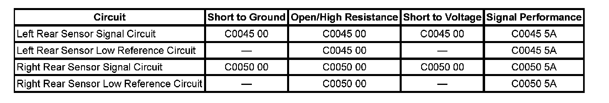

Antilock Brakes / Traction Control Systems
DTC C0045 or C0050
DTC Descriptors
DTC C0045 00
Left Rear Wheel Speed Sensor Circuit
DTC C0045 5A
Left Rear Wheel Speed Sensor Circuit Erratic Signal
DTC C0050 00
Right Rear Wheel Speed Sensor Circuit
DTC C0050 5A
Right Rear Wheel Speed Sensor Circuit Erratic Signal
Diagnostic Fault Information
Perform the Diagnostic System Check - Vehicle prior to using this diagnostic procedure. Initial Inspection and Diagnostic Overview

Circuit/System Description
The wheel speed sensor receives a 12-volt power supply voltage from the electronic brake control module (EBCM) and provides an output signal to the EBCM. As the wheel spins, the wheel speed sensor sends the EBCM a DC square wave signal. The EBCM uses the frequency of the square wave signal to calculate the wheel speed.
Conditions for Running the DTC
C0045 00 - C0050 00
^ The ignition is ON.
^ Ignition voltage is greater than 9.5 volts.
C0045 5A - C0050 5A
^ The ignition is ON.
^ Ignition voltage is greater than 9.5 volts.
^ The brake pedal is not pressed.
^ A DTC is not set for the other wheel speed circuit on the same axle.
Conditions for Setting the DTC
^ An erratic signal output of the wheel speed sensor is detected.
^ A short to voltage, open or ground is detected on the wheel speed sensor signal circuit.
^ A open or short to ground in the wheel speed sensor circuit supply voltage.
^ Wheel speed sensor power supply is less than 7.6 volts.
^ A missing wheel speed sensor signal
Action Taken When the DTC Sets
^ The EBCM disables the Antilock Brake System (ABS)/Traction Control System (TCS)/Vehicle Stability Enhancement System (VSES) for the duration of the ignition cycle.
^ The electronic brake distribution (EBD) does not function optimally.
^ The ABS indicator turns ON.
^ The Traction Control indicator turns ON.
^ The driver information center (DIC) displays the Service Stability System message.
Conditions for Clearing the DTC
^ The condition for setting the DTC is no longer present.
^ The EBCM automatically clears the history DTC when a current DTC is not detected in 100 consecutive drive cycles.
Diagnostic Aids
If 2 or more wheel speed sensors are inoperative diagnose each wheel speed sensor individually.
If the customer comments that the ABS indicator is ON only during moist environmental conditions: rain, snow, vehicle wash, etc., inspect the wheel speed sensor wiring for signs of water intrusion. If the DTC is not current, clear all DTCs and simulate the effects of water intrusion by using the following procedure:
1. Spray the suspected area with a 5 percent saltwater solution. To create a 5 percent saltwater solution, add 2 teaspoons of salt to 8 fl oz of water (10 g of salt to 200 ml of water).
2. Test drive the vehicle over various road surfaces, bumps, turns, etc., above 50 km/h (31 mph) for at least 20 seconds.
3. If the DTC returns, replace the suspected wheel speed sensor or repair the wheel speed sensor wiring.
4. Rinse the area thoroughly when completed.
Reference Information
Schematic Reference
Antilock Brake System Schematics
Connector End View Reference
Antilock Brake System Connector End Views
Description and Operation
ABS Description and Operation (Under 8600 GVW ) ABS Description and Operation (Equal to or Over 8600 GVW)
Electrical Information Reference
^ Circuit Testing
^ Connector Repairs
^ Testing for Intermittent Conditions and Poor Connections
^ Wiring Repairs
Scan Tool Reference
Scan Tool Data List for EBCM
Circuit/System Verification
With scan tool installed drive the vehicle in a straight line at a speed greater than 20 km/h (13 mph), all wheel speed sensors should read the same speed.
Circuit/System Testing
Note: It is recommend that Component Testing is performed before Circuit Testing when diagnosing wheel speed sensors.
Note: Performing Circuit Testing with EBCM connector disconnected and key on will cause U codes to set. Clear DTCs after performing the test.
1. Ignition OFF, disconnect the EBCM connector. With the EBCM connector disconnected and the ignition ON, measure for 0 volts between the wheel speed sensor signal circuit or the wheel speed sensor low reference circuit and ground at the EBCM connector.
^ If over 0 volt, repair short to voltage in the wheel speed sensor signal circuit or the wheel speed sensor supply voltage circuit.
2. With the ignition OFF and the wheel speed sensor harness disconnected, Measure for infinite ohms of resistance between ground and the wheel speed sensor signal and the wheel speed sensor low reference circuit from the EBCM connector.
^ If less than infinite ohms, repair short to ground in the sensor signal or the low reference circuit.
3. Measure for infinite ohms of resistance between the wheel speed sensor signal circuit and the wheel speed low reference circuit at the EBCM connector.
^ If less than infinite ohms, repair short between the wheel speed sensor signal circuit and the wheel speed sensor low reference circuit.
^ If all circuits test normal replace the suspect wheel speed sensor.
^ If all the circuits, and the wheel speed sensor test normal, replace the EBCM.
Component Testing
1. Ignition OFF, disconnect the wheel speed sensor connector. Connect a 12 volt test light from B+ to the positive side of the wheel speed sensor connect terminal, and the other wheel speed connector terminal to a DMM positive lead and the other lead to ground. The DMM is set on the mA display.
^ If the reading is below 4 mA replace the wheel speed sensor.
2. At the wheel speed sensor,. Set-up a DMM to measure current flow (mA/A). Spin the wheel very slowly. Measure for 4-8 mA on the low reading and 12-16 mA on the high reading.
^ If the low amperage output of the wheel speed sensor signal circuit is below 4 mA or above 8 mA or the high amperage output of the wheel speed sensor signal circuit is below 12 mA or above 16 mA replace the wheel speed sensor.
^ If all the circuits, and the wheel speed sensor test normal, replace the EBCM.
Repair Instructions
^ Front Wheel Speed Sensor Replacement
^ Control Module References for EBCM
Repair Verification
Diagnostic Repair Verification